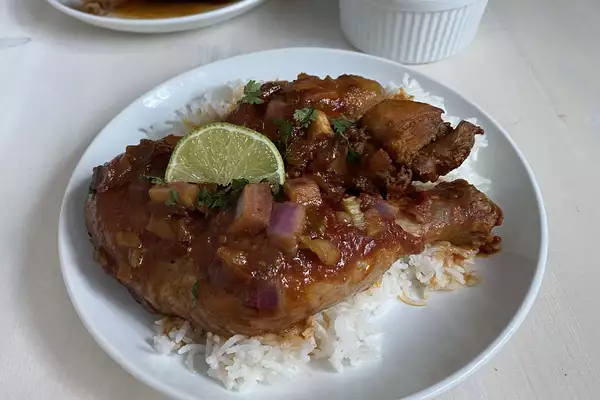

Pollo Guisado

Description
Pollo guisado is the most tender, flavorful chicken
you'll ever eat. Among the most common dishes in the Dominican Republic,
it is typically served with Dominican rice and beeans with a slice
of fresh avocado.
Ingredients
- 1 (3 to 3 1/2 pound) whole chicken, skin removed and cut into pieces
- ¼ cup rancho adobo sazon criollo, or to taste
- 1 red onion, chopped into large pieces
- 2 Cubanelle peppers, chopped
- 1/4 cup sazon liquido
- 1 tablespoon garlic paste
- 1/3 cup vegetable oil
- 1 tablespoon light brown sugar
- 1/3 cup tomato paste
- 1 stalk celery, chopped
- 2 tablespoons chicken bouillon powder, or more to taste
- 1 cup water
Steps
- Place chicken pieces in a bowl and season generously with ranchero sazon criollo. Add onion, Cubanelle peppers, sazon liquido, and garlic paste. Toss to coat chicken evenly.
- Put oil in the bottom of a heavy pot. Add brown sugar and do not stir. Turn heat to medium-high and cook until sugar is very, very dark brown but not burned, 5 to 10 minutes. Carefully add chicken pieces to the pot 1 at a time, reserving vegetables and any liquid left in the bowl. Stir chicken, coating each piece with sugar-oil mixture. Cover and cook for 8 to 10 minutes.
- Add reserved vegetables and liquid, water, tomato paste, celery, and bouillon powder to the pot and stir to combine. Cover and reduce heat to medium-low. Let stew until chicken is cooked and tender, 15 to 30 minutes.